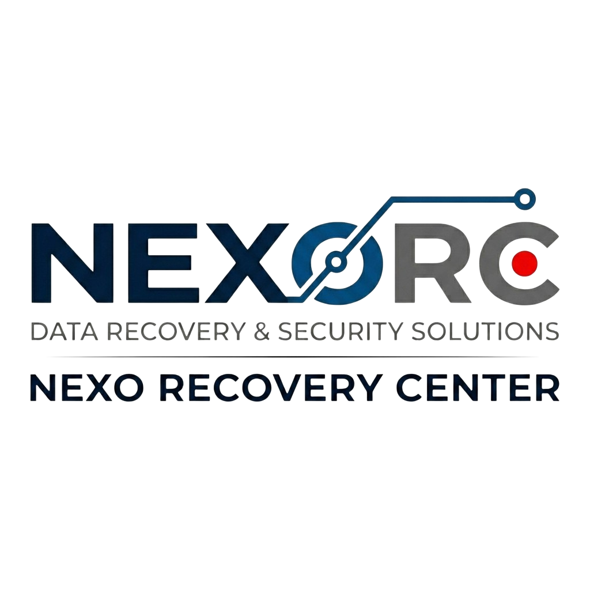
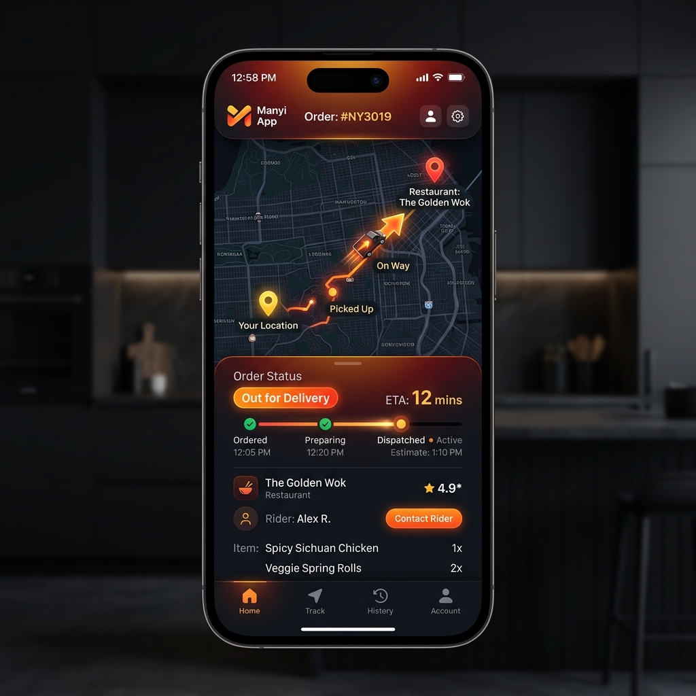

Laboratorio Tecnológico
& Desarrollador de Soluciones Propias
Auditoría forense de alto nivel y desarrollo de productos de impacto escalable.
División Forense
Infraestructura y análisis crítico bajo estrictos protocolos de cadena de custodia.
Recuperación de Datos Forense
Especialistas en extracción de datos de discos duros inaccesibles, memorias dañadas y dispositivos con ruidos internos (clackeo) o errores lógicos graves.
- Diagnóstico Inicial: Se cobra un valor fijo por la revisión técnica en terreno.
- Compromiso de Éxito: El valor de recuperación solo se paga si la información es rescatada.
- Abono: Si la recuperación es exitosa, el diagnóstico inicial se descuenta del total.
Sello BIOCHAKRA®: Si el dispositivo es declarado 'Irrecuperable' por daño físico total, ofrecemos la disposición final de los componentes bajo normas de reciclaje para no contaminar el entorno.
Auditoría y Seguridad de Redes (Wi-Fi y Física)
Detección de Intrusos: Análisis para saber quién está conectado a su red Wi-Fi sin autorización y bloqueo de dispositivos sospechosos.
Blindaje de Acceso: Eliminación de contraseñas genéricas de fábrica (como admin/admin) en routers y equipos de red.
Protección de Cámaras IP: Configuración para evitar que delincuentes bloqueen o tomen control de sus sistemas de vigilancia.
Diagnóstico de Vulnerabilidades: Informe de puntos débiles en la red que podrían ser usados para robar información o desactivar alarmas.
Certificación Legal de Borrado
Cumplimiento Ley de Datos: Destrucción irreversible de información sensible, obligatorio para empresas bajo la Nueva Ley de Protección de Datos Personales de Chile.
Autenticación Legal: Emisión de Certificado de Borrado Seguro autenticado vía Firma.cl (Firma Electrónica Avanzada), con plena validez ante tribunales y auditorías.
Transparencia Absoluta: Proceso ejecutado frente a usted mediante nuestro Laboratorio a Domicilio. Se entrega Boleta de Honorarios por Servicios Profesionales.
Sello BIOCHAKRA®: Si el disco queda inutilizable, el certificado oficial avala su reciclaje bajo estrictas normativas ambientales.
Soporte Técnico Especializado & Optimización de Sistemas
- Reinstalación limpia de Windows/Linux y configuraciones.
- Recuperación de acceso y desbloqueo de contraseñas.
- Limpieza profunda y optimización para máxima velocidad.
Clonación de Discos de Alta Fidelidad: Migración de HDD a SSD sin perder programas, configuraciones ni Certificados Digitales del SII. Solución crítica para empresas que no pueden detener su facturación.
Chequeo preventivo de salud de discos para evitar pérdida de datos.
- Instalación y certificación de puntos de red (RJ45).
- Testeo de cables existentes para eliminar lentitud.
Valor Agregado: Emisión de Boleta de Honorarios. Sello BIOCHAKRA®: Todo cable o componente reemplazado es procesado como residuo tecnológico responsable.
Cobertura Regional
Servicio técnico presencial en toda la Provincia de Quillota y alrededores.
Desarrollador de Soluciones Propias
Diseñamos, desarrollamos y escalamos software de alto impacto comercial.
Plataforma de Logística Gastronómica
Nuestro producto estrella. Un ecosistema logístico completo con sincronización en tiempo real. Diseñado para optimizar el retiro en local y gestionar repartos con flota propia con precisión milimétrica.
- Sincronización en Tiempo Real
- Gestión de Repartos con Flota Propia
- Tracking de Órdenes Avanzado
- UI/UX de Alta Conversión

EQUIPAMIENTO DE LABORATORIO CERTIFICADO
Todo el hardware técnico. Calidad profesional seleccionada para tus proyectos de alto rendimiento.
Los creadores de Amazon recomiendan productos de forma independiente y pueden ganar una comisión por las compras. Los creadores de Amazon y Amazon pueden obtener ingresos de Sponsored Products por los clics
EXPLORAR HARDWARE EN AMAZONCanales de Soporte Oficial
WhatsApp / Teléfono
+56 9 7156 8682
Email Corporativo
soporte@nexorc.cl
Ubicación
La Calera, Provincia de Quillota y Alrededores